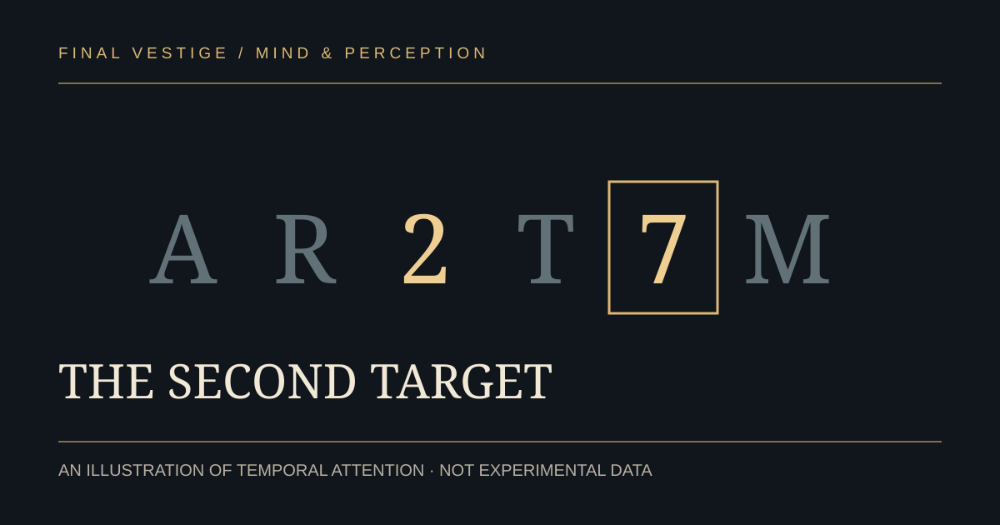

Tools Under Review / Research, not a recommendation
Before you buy twelve minutes of calm.
Zen12 promises a convenient audio routine. Research on attention is fascinating—but it cannot tell you whether this particular recording will deliver the result you hope for. Here is how to decide with clear eyes.
A 42-second visual field note (optional)
An original, captioned film is in production review; this source-controlled storyboard is not a playable video. Nothing plays automatically. The complete buyer guide below is unchanged.

Open complete 42-second narration transcript (no playback)
0–7 seconds. Two numbers appear in a stream of letters. You catch the first. The second is gone.
7–14 seconds. Scientists call this the attentional blink. No eyelid moves.
14–21 seconds. Training may change performance on this task, in some research settings.
21–28 seconds. That does not prove any branded audio recreates the result in twelve minutes.
28–35 seconds. Before buying, check the actual files, the evidence and the refund terms.
35–42 seconds. Try the free twelve-minute routine first. Then decide for yourself.
Caption master: WebVTT captions · Shot list and sound-free production notes. Film variant is not eligible for an A/B launch until video encoding, caption sync, performance and accessibility QA pass.
The problem is not finding twelve minutes. It is knowing what the promise means.
In a 1992 laboratory experiment, researchers made a second visual target difficult to report simply by placing it shortly after a first target in a fast stream. A 2007 experiment later found changes in that attentional-blink measure after three months of intensive meditation training. It did not test Zen12 or establish that twelve minutes of commercial audio equals an hour of meditation.
Read the underlying investigation and research citations. An interesting result deserves examination—not a leap from “attention can be trained” to “this product is proven.”
A good audio routine may make practice easier to schedule. Convenience is an offering; a guaranteed cognitive outcome is a different claim.
Try this before you spend anything
Pick one modest, safe task. Write down what completion would look like. Work for twelve minutes with notifications silenced. Make a simple note each time you intentionally return to the task after noticing a distraction. When the timer ends, record what you completed, whether interruptions occurred, and how the task felt. Repeat another day before drawing conclusions.
This is a self-observation aid, not a controlled attentional-blink experiment, clinical assessment, or promise to improve mental health. The original Seven Day Focus Fieldbook is free and is offered through Final Vestige’s existing Jetpack/Dispatch subscription route, with no additional sign-up system here.
What Zen12 actually says it sells
The official Zen12 seller page describes a progressive series of twelve-minute audio sessions with separate product tiers. These are seller-described package contents, not verified product benefits or a quote from a completed purchase.
| Package | Seller-described content | For whom it may fit |
|---|---|---|
| Beginner | First six levels · 24 MP3s | Someone seeking an entry collection rather than all twelve levels |
| Premium | All twelve levels · 48 MP3s | Someone specifically seeking the complete series |
| Advanced | Final six levels · 24 MP3s | Someone who understands that it omits the beginner half |
Prices are deliberately omitted: changing promotional display prices are not verified taxes, currency, checkout totals or refund conditions. We have not authenticated a purchase flow. The advertised “hour in twelve minutes” equivalence remains a seller claim, not independent evidence.
Is Zen12 even the right kind of recording?
Zen12: a tiered meditation-audio program with short recurring sessions. Hypnosis Live Total Focus: a separate seller-described 33-minute hypnosis recording, not a Zen12 tier. Brainwave Shots Focus Shot: a separate package describing 15- and 30-minute audio tracks. Do not confuse the formats or infer that research on meditation validates all three. See Total Focus’s exact official page and Focus Shot’s official page.
For structured routines, ask how often you will actually listen. For guided suggestion, read what the seller says the recording asks you to do and whether that style suits you. For audio with technical brainwave claims, request product-specific evidence. None of the exact product pages establishes a guaranteed cognitive, medical or financial result.
Before buying: four questions worth asking
“Will it make me focus better?”
Not established for this branded product by the cited attentional-blink or mindfulness studies. A convenient listening structure may still have personal value, but that is a preference, not independently proven efficacy.
“Is Premium the same as Beginner?”
No. The seller describes Premium as twelve levels and 48 MP3s, while Beginner contains six levels and 24 MP3s. Advanced describes the final six levels only.
“Can I get the free sample without another email list?”
The Zen12 gift page expressly says requesting its MP3 also enrolls you in Zen12’s seller newsletter. That is a separate relationship from Final Vestige’s existing Fieldbook/Dispatch list. We do not send visitor email addresses to the merchant.
“What about refunds or current checkout price?”
We have not verified the final cart, jurisdiction-specific terms, delivery access or exact refund route. Confirm them directly with the seller before placing an order. No evergreen dollar price, countdown, risk-free guarantee or personal user endorsement is asserted here.
Where to go next
First, use the free Focus Fieldbook or read the attentional-blink investigation. A merchant link is intentionally unavailable while partner approval, permitted promotional channels, issued earning URL and product-specific checkout terms remain unverified.
Affiliate disclosure for any future merchant recommendation: If you purchase through an approved earning link, Final Vestige may earn a commission at no additional cost to you. There is no active affiliate link on this review page.
Do not infer a purchase or endorsement from this disabled control. Nothing is tracked or submitted here.
Source trail and editorial independence
Experiment: Raymond et al. 1992. Intensive training: Slagter et al. 2007. Relevant historical context: Puységur files. Commercial-claim rules: FTC endorsements and health-products guidance.
We have not used or clinically tested these products, and do not attribute a performance improvement to them. The journal articles are research about different tasks and interventions. See the Final Vestige Editorial Standards.